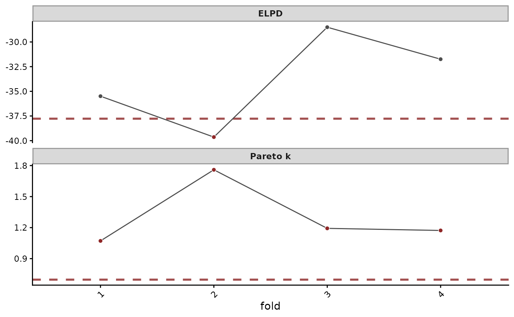

Estimates the expected log predictive density of held-out groups of
rows. A fold that importance sampling approximates well takes the
PSIS estimate of loo::loo() on the fold's summed log likelihood.
The rest are refitted without the fold, as lfo_cv.mvgam() refits
the time blocks it cannot approximate. Three settings cover the
range:
Usage
# S3 method for class 'mvgam'
kfold(
x,
K = NULL,
group = NULL,
folds = NULL,
exact = FALSE,
pareto_k_threshold = NULL,
fold_split = c("grouped", "stratified", "random"),
seed = NULL,
silent = 1L,
...
)Arguments
- x
A fitted
mvgamobject.- K
Integer number of folds. With
groupandK = NULL(the default), each group is a fold. AKbelow the number of groups bins the groups intoKfolds withloo::kfold_split_grouped(). Withoutgroup,Kdefaults to 10.- group
Optional character vector of training-data columns whose combinations define the groups.
NULL(the default) takes the closure unit of anocc()ornmix()model and the row otherwise.- folds
Optional integer vector of one fold per training row, replacing
Kandfold_split. Each fold is then held out and scored as one group. A fold never splits a group, which is a closure unit by default.- exact
Logical.
TRUErefits every fold. Defaults toFALSE.- pareto_k_threshold
Numeric. A fold whose Pareto-k exceeds it is refitted.
NULL(the default) takesmin(1 - 1 / log10(S), 0.7)forSposterior draws.Infrefits nothing.- fold_split
"grouped"(the default),"stratified"or"random": theloo::kfold_split_*()function binning groups intoKfolds when there are more groups than folds.- seed
Optional integer seed for the fold split and the refits. The session's random state is restored when the call returns.
- silent
Integer in
\{0, 1, 2\}.0prints each refit and its sampler start and finish lines.1(default) prints the refit count.2prints nothing.- ...
Unused. Anything passed here is refused.
Value
A c("mvgam_kfold", "kfold", "loo") object, which
loo::loo_compare() takes as it takes loo.mvgam() results. It
holds:
estimates:elpd_kfold,p_kfoldandkfoldicwith their standard errors.pointwise: the ELPD of each group.pointwise_psisholds the PSIS estimates before any refit.pareto_k: the Pareto-k of each group's PSIS estimate, allNAunderexact = TRUE.n_refitsandrefit_groups: the number of refitted folds and the groups they hold.Kandexact: the number of folds and the mode.group: the grouping columns,"fold"whenfoldswas given, orNULLfor single rows.pareto_k_threshold: the threshold applied, withpareto_k_threshold_adaptiveTRUEwhen the default rule set it.
Details
pareto_k_threshold = Infrefits nothing. Pareto-k warnings mark folds the approximation fits poorly.The default refits the folds whose Pareto-k exceeds
pareto_k_threshold, which is often a handful.exact = TRUErefits every fold, asbrms::kfold()does.
group takes several columns, such as c("site", "season"). Every
row of one combination stays in the same fold.
References
Burkner P-C, Gabry J, Vehtari A (2020). Approximate leave-future-out cross-validation for Bayesian time series models. Journal of Statistical Computation and Simulation, 90(14), 2499–2523. doi:10.1080/00949655.2020.1783262 .
Vehtari A, Gelman A, Gabry J (2017). Practical Bayesian model evaluation using leave-one-out cross-validation and WAIC. Statistics and Computing, 27, 1413–1432. doi:10.1007/s11222-016-9696-4 .
See also
loo.mvgam() approximates leave-one-out cross-validation.
lfo_cv.mvgam() scores forecasts from rolling origins.
summary.mvgam_kfold() and plot.mvgam_kfold() report each group.
The
forecast evaluation article
compares models by cross-validation.
Other model comparison:
bridge_sampler.mvgam(),
compare_elpds(),
lfo_cv.mvgam(),
log_lik.mvgam(),
loo.mvgam(),
loo_compare.mvgam_lfo(),
mvgam_loo_extras,
posterior_average.mvgam(),
waic.mvgam()
Examples
# \dontrun{
set.seed(13)
simdat <- sim_mvgam(family = gaussian(), n_series = 1L,
n_timepoints = 120L, type = 6L)
mod <- mvgam(y ~ s(season, bs = "cc"),
trend_formula = ~ CAR(),
data = simdat$data_train,
family = gaussian(),
chains = 2, silent = 2)
#> Warning: 3 of 2000 (0.0%) transitions ended with a divergence.
#> See https://mc-stan.org/misc/warnings for details.
# Neighbouring times share information through the trend. Folds of
# contiguous time blocks hold each block out whole. Folds that PSIS
# approximates poorly are refitted.
blocks <- cut(simdat$data_train$time, breaks = 4L, labels = FALSE)
k <- kfold(mod, folds = blocks)
#> kfold: refitting 4 fold(s) ...
#> Warning: 9 of 2000 (0.0%) transitions ended with a divergence.
#> See https://mc-stan.org/misc/warnings for details.
#> Warning: 1 of 2 chains had an E-BFMI less than 0.3.
#> See https://mc-stan.org/misc/warnings for details.
#> Warning: 6 of 2000 (0.0%) transitions ended with a divergence.
#> See https://mc-stan.org/misc/warnings for details.
#> Warning: 5 of 2000 (0.0%) transitions ended with a divergence.
#> See https://mc-stan.org/misc/warnings for details.
#> Warning: 23 of 2000 (1.0%) transitions ended with a divergence.
#> See https://mc-stan.org/misc/warnings for details.
k
#> mvgam k-fold cross-validation
#> elpd_kfold : -135.79 (SE 10.72)
#> kfoldic : 271.58 (SE 21.43)
#> groups : 4 (fold)
#> refits : 4 of 4 folds
#> Pareto k : max 1.62, median 1.31, threshold 0.70 (adaptive)
#>
#> Lowest ELPD (share of the total):
#> 2 -41.30 (30.4%)
#> 1 -34.51 (25.4%)
#> 4 -30.49 (22.5%)
#>
#> Largest change from PSIS to refit:
#> 2 -34.82 -> -41.30
#> 1 -31.30 -> -34.51
#> 3 -27.84 -> -29.49
# The ELPD and Pareto k of each block
plot(k)

# Next, lfo_cv() scores forecasts made from rolling origins
# }